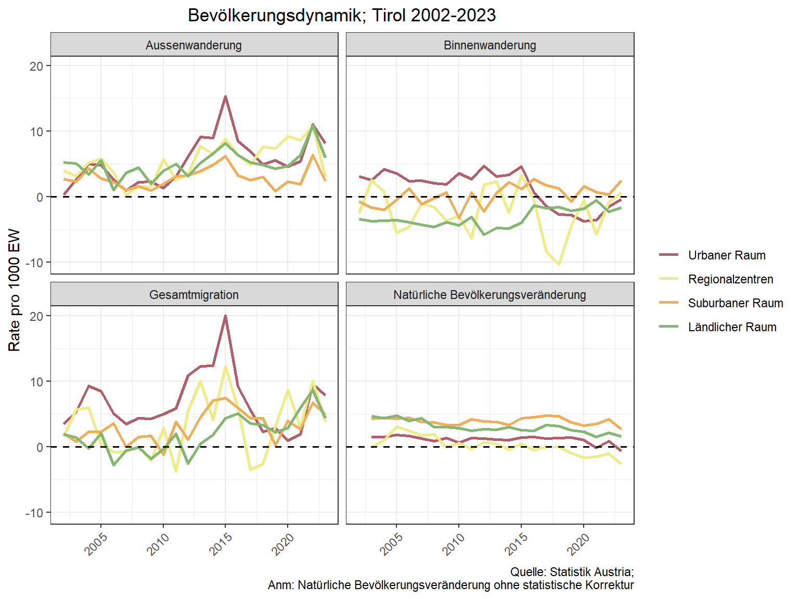
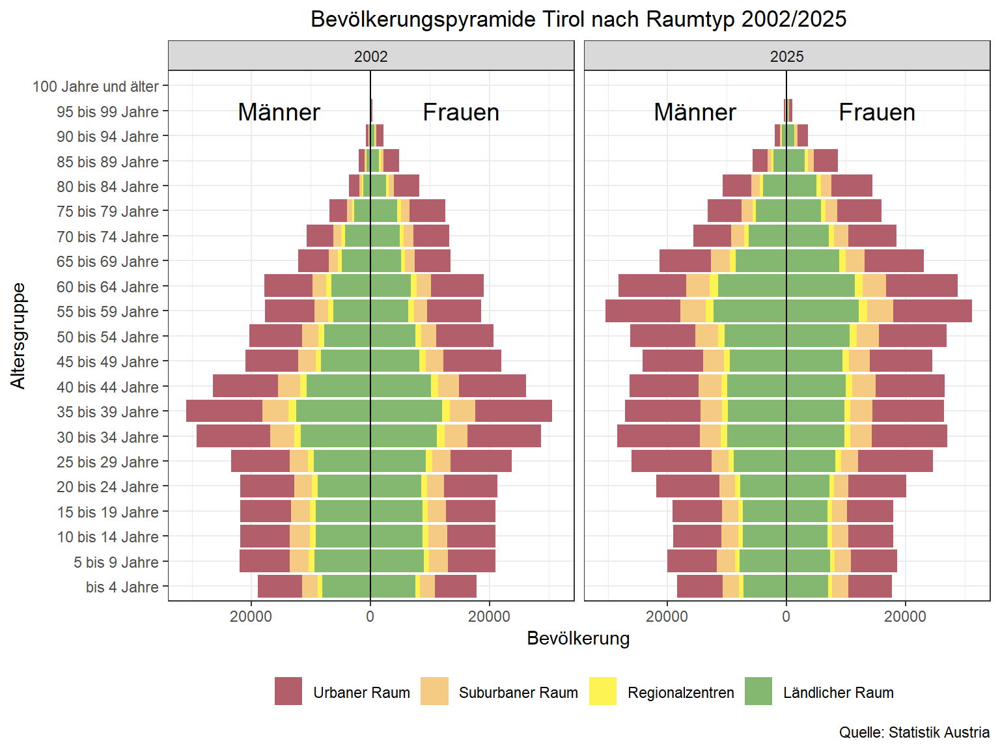
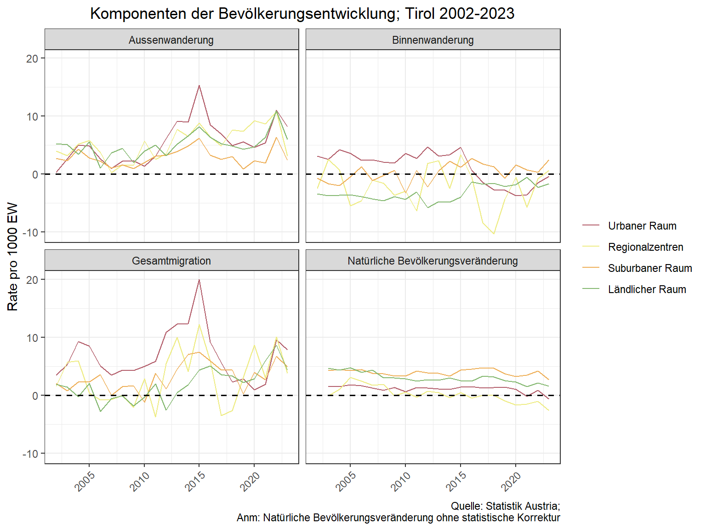
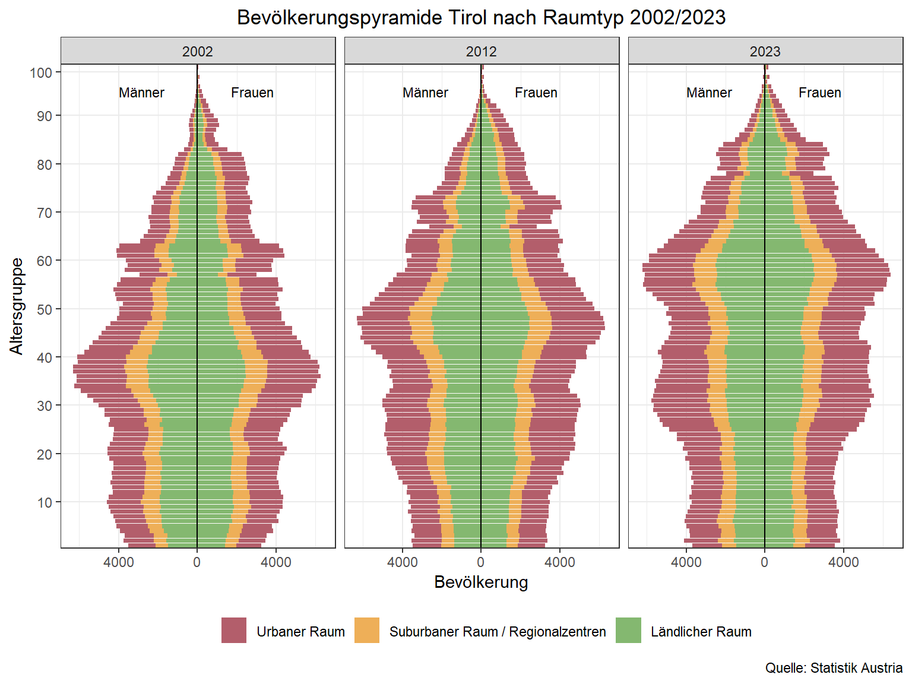
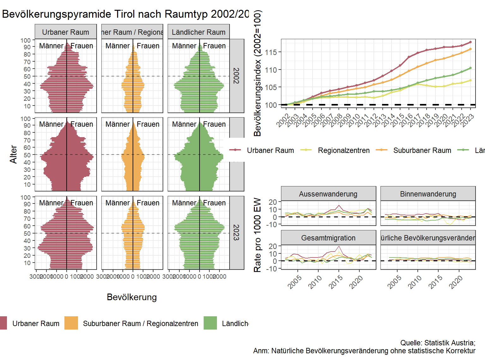
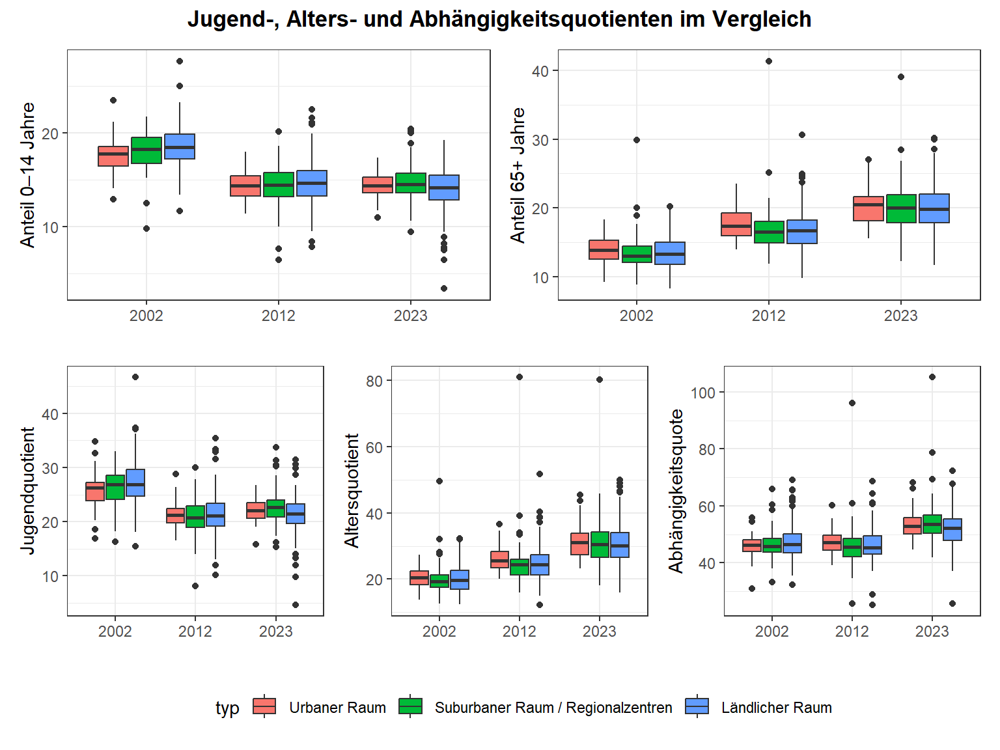

pop_tirol <- read.csv("data/Bevölkerungsdaten.csv") %>%
filter(str_sub(gemnr, 1, 1) == "7" & !jahr %in% c(2024,2025))
moves <- read.csv("data/Wanderungsdaten.csv") %>%
filter(str_sub(gemnr, 1, 1) == "7")Skript 3 - Regionsprofil
3.1. Daten Import & Bereinigung
Für die Erstellung eines demographischen Regionsprofiles importieren wir Bevölkerungsdaten und Wanderungsdaten. Mit filter() wählen wir aus dem Datensatz nur die Tiroler Gemeinden aus.
Mit left_join() fügen wir die Wanderungsdaten zu den Bevölkerungsdaten hinzu, um einen Datensatz zu erhalten.
dta <- left_join(pop_tirol, moves, by = c("jahr", "gemnr"))3.2. Raumtypologien
Die Urban-Rural-Typologie der Statistik Austria ist eine räumliche Klassifikation, die Gemeinden bzw. Regionen anhand von Kriterien wie Bevölkerungsdichte, strukturellen Merkmalen und Erreichbarkeit in städtische, intermediäre und ländliche Raumtypen einteilt, um statistische Analysen zu ermöglichen.
Die Urban-Rural Typologie der Statistik Austria kann im STATAtlas heruntergeladen werden: https://www.statistik.at/atlas/?mapid=topo_regionale_gliederung_oesterreich
typ <- read.csv2("data/003_gliederungen_nach_städtischen_und_ländlichen_gebieten(1).csv")Wir joinen die Raumtypen anhand der Gemeindenummern (gemnr) mit unserem Datensatz.
dta <- left_join(dta, typ, by = "gemnr")
## Recoding typ$typ into typ$typ_rec
dta$typ <- dta$typ %>%
as.character() %>%
fct_recode(
"Urbaner Raum" = "101",
"Urbaner Raum" = "102",
"Urbaner Raum" = "103",
"Regionalzentren" = "210",
"Regionalzentren" = "220",
"Suburbaner Raum" = "310",
"Suburbaner Raum" = "320",
"Suburbaner Raum" = "330",
"Ländlicher Raum" = "410",
"Ländlicher Raum" = "420",
"Ländlicher Raum" = "430"
)
anyNA(dta)[1] FALSE3.3. Berechnungen auf Gemeindeebene nach Raumtypologie
Wie bereits in Skript 2 berechnen wir relevante demografische Indizes auf Gemeindeebene.
df_agg_02_12 <- dta %>%
filter(jahr >= 2002, jahr <= 2012) %>%
group_by(gemnr) %>%
summarise(
bi_zu = sum(bi_zu, na.rm = TRUE),
bi_weg = sum(bi_weg, na.rm = TRUE),
bi_saldo = bi_zu - bi_weg,
au_zu = sum(au_zu, na.rm = TRUE),
au_weg = sum(au_weg, na.rm = TRUE),
au_saldo = au_zu - au_weg,
total_zu = bi_zu + au_zu,
total_weg = bi_weg + au_weg,
total_saldo = total_zu - total_weg,
pop_start = pop[jahr == min(jahr)],
pop_end = pop[jahr == max(jahr)],
bi_rate = ((bi_saldo) / pop_end) * 1000,
au_rate = ((au_saldo) / pop_end) * 1000,
total_rate = (total_saldo / pop_end) * 1000,
pop_change_rate = ((pop_end - pop_start) / pop_start) * 100,
nat_saldo = (pop_end - pop_start) - total_saldo,
nat_rate = (nat_saldo / pop_start) * 1000,
.groups = "drop"
) %>%
mutate(decade = "2002-2012")
df_agg_13_23 <- dta %>%
filter(jahr >= 2013, jahr <= 2023) %>%
group_by(gemnr) %>%
summarise(
bi_zu = sum(bi_zu, na.rm = TRUE),
bi_weg = sum(bi_weg, na.rm = TRUE),
bi_saldo = bi_zu - bi_weg,
au_zu = sum(au_zu, na.rm = TRUE),
au_weg = sum(au_weg, na.rm = TRUE),
au_saldo = au_zu - au_weg,
total_zu = bi_zu + au_zu,
total_weg = bi_weg + au_weg,
total_saldo = total_zu - total_weg,
pop_start = pop[jahr == min(jahr)],
pop_end = pop[jahr == max(jahr)],
bi_rate = ((bi_saldo) / pop_end) * 1000,
au_rate = ((au_saldo) / pop_end) * 1000,
total_rate = (total_saldo / pop_end) * 1000,
pop_change_rate = ((pop_end - pop_start) / pop_start) * 100,
nat_saldo = (pop_end - pop_start) - total_saldo,
nat_rate = (nat_saldo / pop_start) * 1000,
.groups = "drop"
) %>%
mutate(decade = "2013-2023")
df_agg <- rbind(df_agg_02_12, df_agg_13_23)
df_agg <- left_join(df_agg, typ, by = "gemnr")## Recoding typ$typ into typ$typ_rec
df_agg$typ <- df_agg$typ %>%
as.character() %>%
fct_recode(
"Urbaner Raum" = "101",
"Urbaner Raum" = "102",
"Urbaner Raum" = "103",
"Regionalzentren" = "210",
"Regionalzentren" = "220",
"Suburbaner Raum" = "310",
"Suburbaner Raum" = "320",
"Suburbaner Raum" = "330",
"Ländlicher Raum" = "410",
"Ländlicher Raum" = "420",
"Ländlicher Raum" = "430"
)
#install.packages("table1")
library(table1)
label(df_agg$pop_change_rate) <- "Bevölkerungsveränderungsrate"
label(df_agg$bi_rate) <- "Binnenwanderungsrate"
label(df_agg$au_rate) <- "Aussenwanderungsrate"
label(df_agg$total_rate) <- "Gesamtmigrationsrate"
label(df_agg$nat_rate) <- "Natürliche Bevölkerunsveränderungsrate"3.4. Deskriptive Statistik: Mittelwert, Median und Standardabweichung
Der Mittelwert ist ein Maß für die zentrale Tendenz einer Verteilung. Er gibt den durchschnittlichen Wert aller Beobachtungen an und ist empfindlich gegenüber Ausreißern. Er berechnet sich aus der Summe aller beobachteten Werte geteilt durch deren Anzahl.
\[ \bar{x} = \frac{1}{n} \sum_{i=1}^{n} x_i \]
Der Median ist der mittlere Wert einer sortierten Verteilung. Er teilt die Daten in zwei gleich große Hälften und ist robust gegenüber Ausreißern.
\[ \tilde{x} = \begin{cases} x_{\frac{n+1}{2}}, & \text{wenn } n \text{ ungerade ist} \\ \frac{x_{\frac{n}{2}} + x_{\frac{n}{2}+1}}{2}, & \text{wenn } n \text{ gerade ist} \end{cases} \]
Die Standardabweichung misst die Streuung der Werte um den Mittelwert. Sie beschreibt, wie stark die Beobachtungen im Durchschnitt vom Mittelwert abweichen. Die Standardabweichung ist nicht robust gegenüber Ausreißern, da diese die Streuung überproportional erhöhen.
\[ s = \sqrt{\frac{1}{n-1} \sum_{i=1}^{n} (x_i - \bar{x})^2} \]
table1(~ pop_change_rate + bi_rate + au_rate + total_rate + nat_rate | typ*decade, data=df_agg)
Urbaner Raum
|
Regionalzentren
|
Suburbaner Raum
|
Ländlicher Raum
|
Overall
|
||||||
|---|---|---|---|---|---|---|---|---|---|---|
| 2002-2012 (N=44) |
2013-2023 (N=44) |
2002-2012 (N=8) |
2013-2023 (N=8) |
2002-2012 (N=67) |
2013-2023 (N=67) |
2002-2012 (N=158) |
2013-2023 (N=158) |
2002-2012 (N=277) |
2013-2023 (N=277) |
|
| Bevölkerungsveränderungsrate | ||||||||||
| Mean (SD) | 6.28 (6.21) | 9.54 (8.12) | 0.701 (5.67) | 2.33 (5.70) | 4.17 (8.33) | 8.72 (8.48) | 2.80 (8.54) | 4.98 (9.29) | 3.62 (8.17) | 6.53 (9.05) |
| Median [Min, Max] | 6.38 [-8.43, 18.7] | 9.23 [-10.0, 33.8] | -1.68 [-5.16, 9.30] | 0.386 [-2.44, 12.6] | 2.76 [-9.10, 26.9] | 7.19 [-8.58, 43.6] | 3.37 [-20.2, 41.8] | 5.72 [-31.4, 37.8] | 3.76 [-20.2, 41.8] | 6.50 [-31.4, 43.6] |
| Binnenwanderungsrate | ||||||||||
| Mean (SD) | 9.03 (76.4) | 21.0 (57.9) | -48.0 (48.9) | -24.8 (51.2) | -13.2 (108) | 15.2 (133) | -52.9 (65.2) | -43.6 (79.0) | -33.3 (82.3) | -18.6 (96.1) |
| Median [Min, Max] | 15.9 [-166, 277] | 30.0 [-140, 154] | -61.9 [-105, 33.9] | -30.6 [-77.5, 63.1] | -29.3 [-195, 668] | -3.71 [-173, 933] | -54.6 [-226, 192] | -43.1 [-475, 119] | -43.3 [-226, 668] | -19.1 [-475, 933] |
| Aussenwanderungsrate | ||||||||||
| Mean (SD) | 23.1 (17.0) | 50.2 (34.2) | 26.5 (19.7) | 48.7 (46.6) | 19.9 (30.2) | 38.5 (40.8) | 36.4 (40.9) | 61.9 (54.4) | 30.0 (35.8) | 54.0 (49.1) |
| Median [Min, Max] | 20.9 [-11.0, 74.3] | 41.8 [2.12, 141] | 26.3 [3.40, 68.1] | 38.2 [1.74, 142] | 17.6 [-34.4, 142] | 28.5 [-10.6, 232] | 33.4 [-96.7, 253] | 48.0 [-37.9, 363] | 24.3 [-96.7, 253] | 40.9 [-37.9, 363] |
| Gesamtmigrationsrate | ||||||||||
| Mean (SD) | 32.1 (80.3) | 71.2 (64.4) | -21.4 (54.3) | 23.9 (59.3) | 6.68 (104) | 53.7 (129) | -16.5 (68.9) | 18.3 (80.1) | -3.30 (81.8) | 35.4 (94.0) |
| Median [Min, Max] | 37.1 [-169, 323] | 72.8 [-73.4, 224] | -14.5 [-102, 62.1] | 13.1 [-47.6, 104] | -5.97 [-149, 643] | 30.0 [-93.9, 975] | -9.48 [-187, 201] | 25.4 [-390, 201] | -3.92 [-187, 643] | 31.5 [-390, 975] |
| Natürliche Bevölkerunsveränderungsrate | ||||||||||
| Mean (SD) | 24.6 (49.2) | 13.8 (51.6) | 26.6 (39.3) | -3.51 (33.7) | 29.8 (87.1) | 22.4 (128) | 39.8 (39.4) | 24.0 (40.9) | 34.6 (56.1) | 21.2 (73.2) |
| Median [Min, Max] | 33.0 [-219, 102] | 18.2 [-248, 80.2] | 27.0 [-41.3, 74.5] | -2.35 [-52.6, 53.9] | 41.1 [-639, 102] | 44.4 [-969, 109] | 43.6 [-124, 241] | 24.9 [-130, 103] | 40.5 [-639, 241] | 27.3 [-969, 109] |
d1 <- ggplot(df_agg, aes(x = pop_change_rate, group = decade, fill = decade))+
geom_density(alpha = 0.5)+
geom_vline(xintercept = 0, linetype = "dashed")+
facet_grid(typ~.)+
theme_bw()
d2 <- ggplot(df_agg, aes(x = bi_rate, group = decade, fill = decade))+
geom_density(alpha = 0.5)+
geom_vline(xintercept = 0, linetype = "dashed")+
facet_grid(typ~.)+
theme_bw()
d3 <- ggplot(df_agg, aes(x = au_rate, group = decade, fill = decade))+
geom_density(alpha = 0.5)+
geom_vline(xintercept = 0, linetype = "dashed")+
facet_grid(typ~.)+
theme_bw()
d4 <- ggplot(df_agg, aes(x = total_rate, group = decade, fill = decade))+
geom_density(alpha = 0.5)+
geom_vline(xintercept = 0, linetype = "dashed")+
facet_grid(typ~.)+
theme_bw()
library(patchwork)
(d1 + d2) / (d3 + d4)+
plot_layout(guides = "collect") &
theme(legend.position = "bottom")
3.5. Berechnungen für aggregierte Gemeindetypen
dta_typ <- dta %>%
mutate(bi_saldo = bi_zu - bi_weg,
au_saldo = au_zu - au_weg) %>%
group_by(jahr, typ) %>%
summarise(pop = sum(pop),
bi_saldo = sum(bi_saldo),
au_saldo = sum(au_saldo))
dta_typ <- dta_typ %>%
group_by(typ) %>%
mutate(pop_diff = pop - lag(pop),
pop_rate = (pop_diff / lag(pop)) * 100,
pop_index = pop / pop[jahr == 2002] * 100,
bi_rate = (bi_saldo / pop) * 1000,
au_rate = (au_saldo / pop) * 1000,
mig_saldo = au_saldo + bi_saldo,
mig_rate = (mig_saldo / pop) * 1000,
nat_change = pop_diff - lag(mig_saldo),
nat_rate = (nat_change / pop)* 1000) %>%
ungroup()p1 <- ggplot(dta_typ, aes(x = as.factor(jahr), y = pop_index, group = typ, color = typ))+
geom_line(linewidth = 0.8) +
geom_point(size = 1) +
geom_hline(yintercept = 100, col = "black", linetype = "dashed", size = 1)+
scale_color_manual(
values = c("Urbaner Raum" = "#b35e6b",
"Suburbaner Raum" = "#eeaf58",
"Regionalzentren" = "#e0df70",
"Ländlicher Raum" = "#84b870"))+
theme_bw()+
theme(axis.text.x = element_text(angle = 45, hjust = 1),
legend.position = "bottom",
legend.direction = "horizontal",
plot.title = element_text(hjust = 0.5))+
labs(y = "Bevölkerungsindex (2002=100)",
x = NULL,
color = NULL,
title = "Bevölkerungsentwicklung nach Gemeindetyp; \n Tirol 2002-2023 (2002 = 100%)",
caption = "Quelle: Statistik Austria")
p1
#eeaf58
#fdf453 3.6. Diagramm Bevölkerungsdynamik
mig_typ <- dta_typ %>%
select(jahr, typ, bi_rate, au_rate, mig_rate, nat_rate)
mig_typ <- mig_typ %>%
pivot_longer(cols = c(bi_rate, au_rate, mig_rate, nat_rate),
names_to = "variable",
values_to = "value") %>%
drop_na()
## Recoding mig_typ$variable into mig_typ$variable_rec
mig_typ$variable <- mig_typ$variable %>%
fct_recode(
"Aussenwanderung" = "au_rate",
"Binnenwanderung" = "bi_rate",
"Gesamtmigration" = "mig_rate",
"Natürliche Bevölkerungsveränderung" = "nat_rate"
)p2 <- ggplot(mig_typ, aes(x = jahr, y = value, group = typ, color = typ))+
geom_line()+
facet_wrap(variable~.)+
geom_hline(yintercept = 0, col = "black", linetype = "dashed", size = 0.7)+
scale_color_manual(
values = c("Urbaner Raum" = "#b35e6b",
"Suburbaner Raum" = "#eeaf58",
"Regionalzentren" = "#eeec85",
"Ländlicher Raum" = "#84b870"))+
theme_bw()+
theme(axis.text.x = element_text(angle = 45, hjust = 1),
legend.position = "right",
legend.direction = "vertical",
plot.title = element_text(hjust = 0.5))+
labs(y = "Rate pro 1000 EW",
x = NULL,
color = NULL,
title = "Komponenten der Bevölkerungsentwicklung; Tirol 2002-2023",
caption = "Quelle: Statistik Austria;\n Anm: Natürliche Bevölkerungsveränderung ohne statistische Korrektur")
p2
3.7. Bevölkerungspyramide nach Raumtyp
Um eine Bevölkerungspyramide nach Raumtyp zu erstellen, importieren wir Bevölkerungsdaten für Österreich aus dem Open Data Portal der Statistik Austria (https://data.statistik.gv.at/web/). Die Daten sind in einem Datenbankformat der Statistik Austria gespeichert. Für unsere Analyse müssen wir die Daten daher für unsere Zwecke bereinigen.
pop_2002 <- read.csv2("data/OGD_bevstandjbab2002_BevStand_2002.csv")
pop_2012 <- read.csv2("data/OGD_bevstandjbab2002_BevStand_2012.csv")
pop_2023 <- read.csv2("data/OGD_bevstandjbab2002_BevStand_2023.csv")Mit rbind() verbinden wir die separaten Datensätze zu einem Dataframe.
pop_pyramid <- rbind(pop_2002,
pop_2012,
pop_2023)
head(pop_pyramid) C.A10.0 C.C11.0 C.GRGEMAKT.0 C.GALTEJ112.0 F.ISIS.1
1 A10-2002 C11-1 GRGEMAKT-10101 GALTEJ112-1 53
2 A10-2002 C11-1 GRGEMAKT-10101 GALTEJ112-2 53
3 A10-2002 C11-1 GRGEMAKT-10101 GALTEJ112-3 53
4 A10-2002 C11-1 GRGEMAKT-10101 GALTEJ112-4 67
5 A10-2002 C11-1 GRGEMAKT-10101 GALTEJ112-5 56
6 A10-2002 C11-1 GRGEMAKT-10101 GALTEJ112-6 60Zunächst ändern wir die Spaltennamen. Mit rename() ändern wir die Namen nach Position (Spaltennummer) im Datensatz. Danach passen wir die Werte für unsere Zwecke an. Mit mutate() und Funktionen aus dem Paket “stringr” können wir die Werte im Datensatz recodieren. str_sub() beispielsweise extrahiert oder ersetzt Teilstrings an bestimmten Positionen innerhalb eines Strings, z. B. von Zeichen X bis Y oder in unserem Fall die letzten -4 Zeichen der Zeichenkette. str_remove() entfernt eine vordefinierte Zeichenkette.
pop_pyramid <- pop_pyramid %>%
rename(jahr = 1,
geschl = 2,
gemnr = 3,
alter = 4,
n = 5) %>%
mutate(jahr = str_sub(jahr, -4),
geschl = str_sub(geschl, -1),
gemnr = str_sub(gemnr, -5),
alter = str_remove(alter, "GALTEJ112-"))
pop_pyramid$alter[pop_pyramid$alter == "GALT5J100-21"] <- "21" # Ein Wert folgt nicht dem Pattern. Wir ersetzen diesen Wert manuell.
unique(pop_pyramid$alter) [1] "1" "2" "3" "4" "5" "6" "7" "8" "9" "10" "11" "12"
[13] "13" "14" "15" "16" "17" "18" "19" "20" "21" "22" "23" "24"
[25] "25" "26" "27" "28" "29" "30" "31" "32" "33" "34" "35" "36"
[37] "37" "38" "39" "40" "41" "42" "43" "44" "45" "46" "47" "48"
[49] "49" "50" "51" "52" "53" "54" "55" "56" "57" "58" "59" "60"
[61] "61" "62" "63" "64" "65" "66" "67" "68" "69" "70" "71" "72"
[73] "73" "74" "75" "76" "77" "78" "79" "80" "81" "82" "83" "84"
[85] "85" "86" "87" "88" "89" "90" "91" "92" "93" "94" "95" "96"
[97] "99" "97" "100" "98" anyNA(pop_pyramid)[1] FALSEcolSums(is.na(pop_pyramid)) jahr geschl gemnr alter n
0 0 0 0 0 Da wir Bevölkerungspyramiden nach Raumtyp haben wollen, joinen wir die Raumtypologie der Statistik Austria mit dem Bevölkerungsdatensatz anhand der Gemeindenummern und vereinfachen diese mit fct_recode(), so dass wir 3 Raumtypen erhalten.
typ <- typ %>%
select(-gemname)
typ$gemnr <- as.character(typ$gemnr)
pop_pyramid <- left_join(pop_pyramid, typ, by = "gemnr")
pop_pyramid$typ[is.na(pop_pyramid$typ)] <- 101
colSums(is.na(pop_pyramid)) jahr geschl gemnr alter n typ
0 0 0 0 0 0 ## Recoding pop_pyramid$typ
pop_pyramid$typ <- pop_pyramid$typ |>
as.character() |>
fct_recode(
"Urbaner Raum" = "101",
"Urbaner Raum" = "102",
"Urbaner Raum" = "103",
"Suburbaner Raum / Regionalzentren" = "210",
"Suburbaner Raum / Regionalzentren" = "220",
"Suburbaner Raum / Regionalzentren" = "310",
"Suburbaner Raum / Regionalzentren" = "320",
"Suburbaner Raum / Regionalzentren" = "330",
"Ländlicher Raum" = "410",
"Ländlicher Raum" = "420",
"Ländlicher Raum" = "430"
)Damit Männer und Frauen auf der x-Achse gespiegelt dargestellt werden können werden die Bevölkerungszahlen der Männer negativ kodiert. ifelse() ist eine Vektorfunktion mit der wir für jede Zeile die Bedingung geschl == "1" überprüfen. Wenn der Wert TRUE ist (also eine 1 in der Zeile vorkommt) wird die Bevölkerungszahl negativ gemacht (-n). Mit fct_inorder() ändern wir die Reihenfolge der Altersgruppen, damit die Altersgruppen korrekt von oben nach unten angezeigt werden.
pop_pyramid <- pop_pyramid %>%
mutate(pop_pyramid = ifelse(geschl=="1", -n, n))
pop_pyramid <- pop_pyramid %>%
mutate(alter=fct_inorder(alter))Wir erstellen eine neue Spalte, in die wir die Bundesländerziffer aus den Gemeindenummern extrahieren. Danach erstellen wir einen neuen Dataframe mit den Bevölkerungszahlen für Tirol.
pop_pyramid <- pop_pyramid %>%
mutate(bld = str_sub(gemnr, 1, 1))
pop_pyramid_tirol <- pop_pyramid %>%
filter(bld == 7)p3 <- ggplot(pop_pyramid_tirol, aes(x=pop_pyramid, y=alter, fill=typ)) +
geom_col() +
scale_fill_manual(
values = c("Urbaner Raum" = "#b35e6b",
"Suburbaner Raum / Regionalzentren" = "#eeaf58",
"Ländlicher Raum" = "#84b870"))+
scale_y_discrete(breaks = seq(0, 100, 10))+
scale_x_continuous(labels=abs) +
geom_vline(xintercept=0, color="black") +
labs(x="Bevölkerung",
y="Altersgruppe",
fill="",
title = "Bevölkerungspyramide Tirol nach Raumtyp 2002/2023",
caption = "Quelle: Statistik Austria")+
facet_grid(.~jahr)+
theme_bw()+
theme(legend.position = "bottom")+
theme(plot.title = element_text(hjust = 0.5))+
annotate(geom="text", x=-2800, y=95, label="Männer", size=3) +
annotate(geom="text", x=2800, y=95, label="Frauen", size=3)
p3
p4 <- ggplot(pop_pyramid_tirol, aes(x=pop_pyramid, y=alter, fill=typ)) +
geom_col() +
scale_fill_manual(
values = c("Urbaner Raum" = "#b35e6b",
"Suburbaner Raum / Regionalzentren" = "#eeaf58",
"Ländlicher Raum" = "#84b870"))+
scale_y_discrete(breaks = seq(0, 100, 10))+
scale_x_continuous(labels=abs) +
geom_vline(xintercept=0, color="black") +
geom_hline(yintercept=50, color="black", linetype = "dashed", alpha = 0.5) +
labs(x="Bevölkerung",
y="Alter",
fill="",
title = "Bevölkerungspyramide Tirol nach Raumtyp 2002/2023",
caption = "Quelle: Statistik Austria")+
facet_grid(jahr~typ)+
theme_bw()+
theme(legend.position = "bottom")+
theme(plot.title = element_text(hjust = 0.5))+
theme(
axis.text.x = element_text(size = 7),
axis.text.y = element_text(size = 7)
)+
annotate(geom="text", x=-1500, y=92, label="Männer", size=3) +
annotate(geom="text", x=1500, y=92, label="Frauen", size=3)
p4
3.8. Kombinierte Darstellung mit Patchwork
library(patchwork)
p2 <- p2 + theme(legend.position = "none") + labs(title = " ")
p3 <- p3 + labs(caption = NULL)
p1 <- p1 + labs(caption = NULL, title = " ")
# p4 + p1 / p23.9. Übersichtskarte
shp <- read_sf("data/OGDEXT_GEM_1_STATISTIK_AUSTRIA_20250101/STATISTIK_AUSTRIA_GEM_20250101.shp")
head(shp) # in der Spalte geometry sind die Koordinaten (Punkte, Polygone, Linien) für jede Gemeinde in Österreich gespeichertSimple feature collection with 6 features and 2 fields
Geometry type: MULTIPOLYGON
Dimension: XY
Bounding box: xmin: 628000 ymin: 437000 xmax: 659000 ymax: 458000
Projected CRS: MGI / Austria Lambert
# A tibble: 6 × 3
g_id g_name geometry
<chr> <chr> <MULTIPOLYGON [m]>
1 10101 Eisenstadt (((637377 439927, 637315 439990, 637303 …
2 10201 Rust (((649519 441308, 649519 441303, 649519 …
3 10301 Breitenbrunn am Neusiedler See (((651391 458137, 651422 458099, 651442 …
4 10302 Donnerskirchen (((657709 448462, 657306 448433, 656683 …
5 10303 Großhöflein (((635650 445524, 635661 445492, 635664 …
6 10304 Hornstein (((634388 450387, 634474 450373, 634515 …shp <- shp %>%
filter(str_sub(g_id, 1, 1) == "7") %>%
left_join(typ, by = c("g_id" = "gemnr"))
shp$typ <- shp$typ %>%
as.character() %>%
fct_recode(
"Urbaner Raum" = "101",
"Urbaner Raum" = "102",
"Urbaner Raum" = "103",
"Regionalzentren" = "210",
"Regionalzentren" = "220",
"Suburbaner Raum" = "310",
"Suburbaner Raum" = "320",
"Suburbaner Raum" = "330",
"Ländlicher Raum" = "410",
"Ländlicher Raum" = "420",
"Ländlicher Raum" = "430"
)
map_typ <- ggplot(data = shp) +
geom_sf(aes(fill = typ), color = "black") +
scale_fill_manual(
values = c("Urbaner Raum" = "#b35e6b",
"Suburbaner Raum" = "#eeaf58",
"Regionalzentren" = "#e0df70",
"Ländlicher Raum" = "#84b870"))+
theme_classic()
map_typ